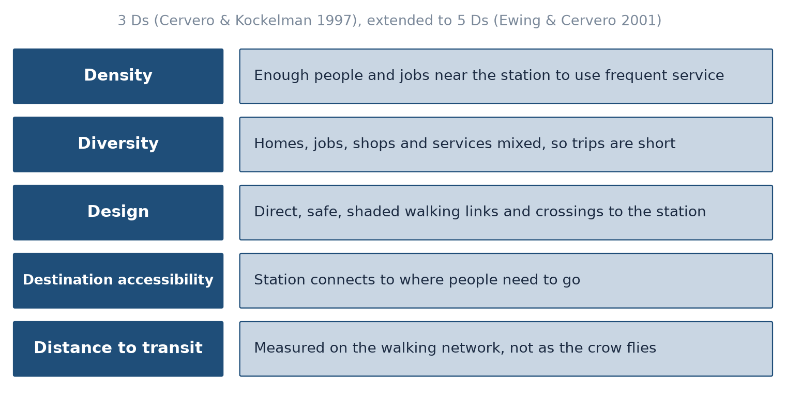
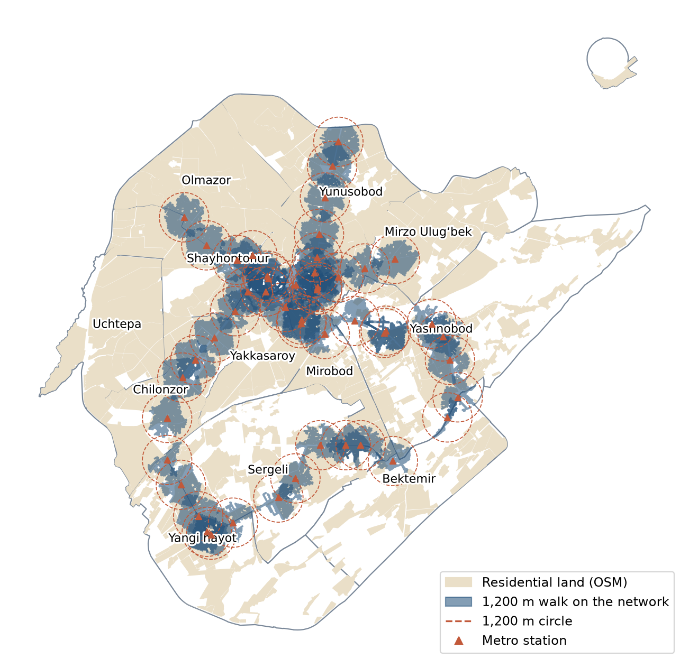
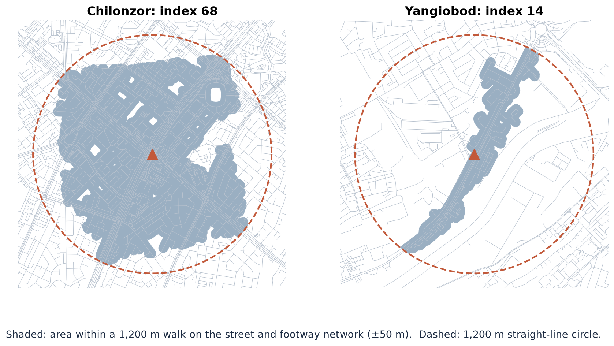
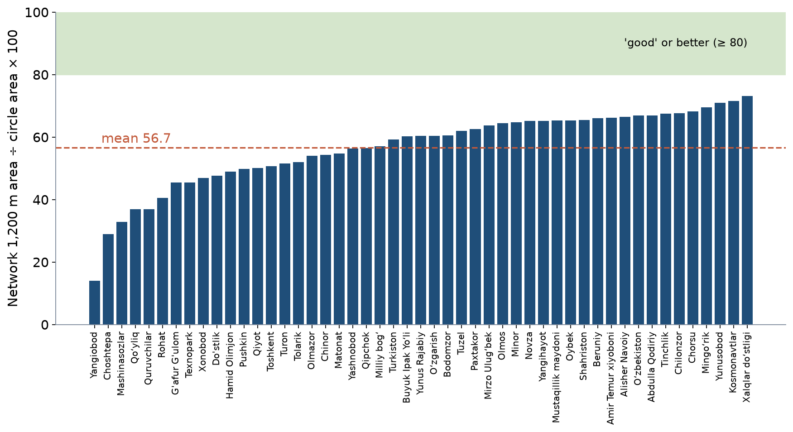
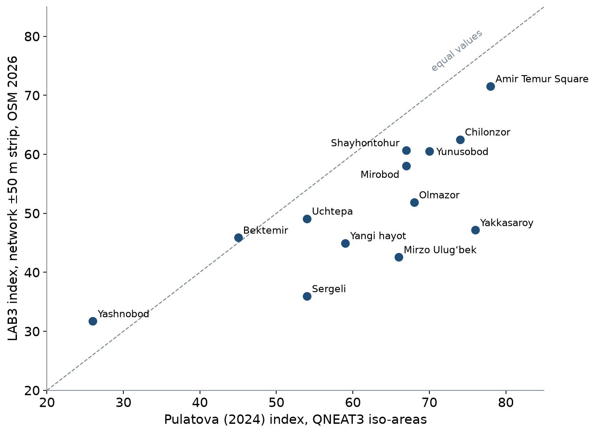

LEC5 · Interactions between urban form and transport
Week 3 · Lecture 1
Interactions between urban form and transport
LEC5 · Urban Transport Systems Planning and Design · TSTU · Prof. J. Sodikov
1 / 25
What you will be able to do after today
Explain how land use and transport shape each other
Use density, diversity, design and distance to read a station area
Measure accessibility with network catchments rather than circles
Judge how well Tashkent's metro stations connect to their neighbourhoods
2 / 25
This lecture is about how land use and transport shape each other. You will use four ideas, density, diversity, design and distance to transit, to read the area around a station. You will also learn to measure accessibility on the real street network instead of with simple circles. Then you will apply this to judge how well Tashkent's metro stations connect to their neighbourhoods.
The land use–transport feedback cycle
Where activities are located creates the need to travel
The transport system decides how easily those places can be reached
Accessibility in turn shapes where homes, jobs and shops locate
The cycle runs over years: a metro line or ring road reshapes a city slowly
Plans that ignore one half of the cycle are surprised by the other
3 / 25
Where homes, jobs and shops are located creates the need to travel, and the transport system decides how easily people can reach those places. That accessibility then affects where new homes, jobs and shops locate. The cycle is slow: a metro line or a ring road reshapes a city over years. A plan that looks at only one half of the cycle will be surprised by the other.
Functional zoning and its legacy
Separating homes, industry and services lengthens everyday trips
Soviet-era planning left Tashkent wide avenues and large residential blocks
Wide cross-sections offer space for change; large blocks lengthen walks
Mixed use brings daily needs within walking distance
4 / 25
Functional zoning means putting homes, industry and services in separate areas, and this makes everyday trips longer. Soviet-era planning left Tashkent with wide avenues and large residential blocks. The wide streets offer space that can be used differently, but the large blocks make walks longer. Mixing uses brings daily needs, such as shops and schools, within walking distance.
Density and car dependence
Cities with lower density show higher car use and longer distances driven
Kenworthy and Laube compared cities worldwide on density, transport and costs
Density alone is not enough: it must be near frequent public transport
Correlation across cities is not proof of cause within one city
5 / 25
Kenworthy and Laube (1999) compared cities around the world on density, transport and costs. Cities with lower density showed higher car use and longer distances driven. Density alone is not enough, though: it helps when homes and jobs sit near frequent public transport. Also remember that a pattern across many cities does not prove what causes car use within one city.
The Ds of the built environment

After Cervero and Kockelman (1997) and Ewing and Cervero (2001); redrawn.
6 / 25
The Ds are features of the built environment that influence how people travel. Cervero and Kockelman (1997) named three: density, diversity (a mix of uses) and design. Ewing and Cervero (2001) added destination accessibility and distance to transit, which makes five. Planners can act on every one of them, and in LAB3 you measure distance to transit along the walking network.
What the evidence says
Ewing and Cervero's meta-analysis: each built-environment variable has a small effect on travel
Effects add up when density, mix, design and transit access come together
Destination accessibility matters most for how far people drive
Street design and connectivity matter most for walking
7 / 25
Ewing and Cervero (2010) combined the results of many studies in a meta-analysis. They found that each built-environment variable on its own has only a small effect on travel. The effects add up when density, mix, design and transit access come together. Destination accessibility matters most for how far people drive, while street design and connectivity matter most for walking. For exact effect sizes, use the tables in the paper itself.
Measuring accessibility (Geurs & van Wee)
Contour measure: opportunities reachable within a time or distance limit
Gravity measure: opportunities weighted by how hard they are to reach
Utility and person-based measures add preferences and time budgets
Four components: land use, transport, time, the individual (Geurs & van Wee)
LAB3 uses a contour measure on the walking network
8 / 25
Geurs and van Wee (2004) sort accessibility measures into types. A contour measure counts the opportunities, such as jobs or shops, reachable within a time or distance limit. A gravity measure counts all opportunities but gives less weight to those that are harder to reach. Utility-based and person-based measures add people's preferences and time budgets, and every measure relates to four components: land use, transport, time and the individual. LAB3 uses a contour measure on the walking network.
Transit-oriented development
Concentrate homes, jobs and services within walking distance of stations
Mix uses so the station area is busy all day
Give walking and cycling the shortest, safest routes to the platform
Measure the walk on the network: barriers, missing crossings and closed blocks cut the catchment
9 / 25
Transit-oriented development (TOD) concentrates homes, jobs and services within walking distance of stations. Mixing uses keeps the station area busy all day, not only at peak times. Walking and cycling should get the shortest and safest routes to the platform. Measure the walk on the network, because barriers, missing crossings and closed blocks shrink the area people can really reach. Pulatova's index uses this idea: it compares the walkable area with an ideal circle.
Tashkent: how far can people walk to the metro?
LAB3 results (OSM, October 2026) and the work of Pulatova and Ergashova
10 / 25
The next slides apply these ideas to Tashkent's metro. They use the LAB3 results, calculated on OpenStreetMap data from October 2026, together with the work of two TSTU researchers. Pulatova developed the walk index method, and Ergashova studied 15-minute walking access for each mahalla.
Walking reach of Tashkent's 49 metro stations

1,200 m walk on the street and footway network (shaded) versus 1,200 m circles (dashed); residential land from OSM.
11 / 25
The map shows how far people can walk to each of Tashkent's 49 metro stations. The shaded areas can be reached by a 1,200 m walk on the street and footway network; this area is the station's walking catchment. The dashed circles show 1,200 m in a straight line, and residential land from OSM is also shown. Notice the gaps inside many circles, and that Uchtepa district has no station at all.
Circle versus network: two stations

Yangiobod (index 14.0, the lowest of all stations) beside rail land versus Chilonzor in a dense street grid: rail lines, canals and large blocks cut the walk.
12 / 25
A station's walk index is the area reachable by a 1,200 m network walk, as a percentage of the 1,200 m circle. Across Tashkent's stations it ranges from 14.0 at Yangiobod to 73.2 at Xalqlar doʻstligi. Yangiobod lies beside rail land, and rail lines, canals and large blocks cut off most of the area within its circle from walkers. The figure compares it with Chilonzor, which lies in a dense street grid and reaches a much larger share of its circle.
What the network does to catchments
Mean station index 56.7; no station reaches 'good' (80–89 = good)
All stations together: 84.72 km² vs 131.65 km² within reach
Residential land within reach: 23.8% vs 33.7% of the twelve districts
Straight-line buffers overstate reachable residential land by about two fifths
13 / 25
On average a station's index is 56.7, and no station reaches the 'good' level of 80–89. Taken together, the walkable areas around all stations cover 84.72 km², against 131.65 km² for the circles. In the twelve study districts, 23.8% of residential land is within reach on the network, compared with 33.7% in a straight line. So straight-line buffers overstate the residential land within reach by about two fifths.
Every station, ranked

Pulatova-type index for each OSM metro station: network 1,200 m area as a percentage of the circle.
14 / 25
This chart ranks every metro station by its walk index: the area reachable by a 1,200 m network walk as a percentage of the circle. Stations at the low end lose most of their circle to barriers such as rail lines, canals or large closed blocks. For such stations, a single new crossing or bridge could add a lot of walkable area. Find the stations near your own corridor and see where they rank.
Stops and services: one corridor
Norm: no more than 500 m walk to the nearest stop (600 m in low-density housing)
Abdulla Qodiriy corridor: 49 bus stops reach on average 63.9 of the 500 m circle
Its 16 schools reach 44.5 of their 800 m circle: large blocks and fences cut the walk
Residential land within 500 m of a stop: 84.2% vs 94.2% in a straight line
LAB3 repeats this for the stops and services on your own corridor
15 / 25
The same method works for bus stops and services. The norm quoted by Pulatova says the walk to the nearest stop should be no more than 500 m (600 m in low-density housing). On the Abdulla Qodiriy corridor, the 49 bus stops reach on average 63.9% of their 500 m circle, and the 16 schools reach 44.5% of their 800 m circle. Within 500 m of a stop lies 84.2% of the residential land on the network, against 94.2% in a straight line. In LAB3 you repeat this for your own corridor.
Replicating Pulatova (2024)
Her index from district centres runs from 78 (Amir Temur Square) to 26 (Yashnobod)
LAB3 repeats it on today's OSM: rank correlation 0.76 with her values
Yakkasaroy differs most: 47.2 vs 76
Different centroid, map date and area method change the level, less the ranking
Lesson: report method choices next to any index value
16 / 25
Pulatova's index, measured from district centres, runs from 78 at Amir Temur Square to 26 in Yashnobod. LAB3 repeats her method on today's OSM data and finds a rank correlation of 0.76 with her values, so the order of districts is broadly similar. Yakkasaroy differs most: 47.2 in LAB3 against 76 in her study. A different centre point, map date and way of measuring area change the level more than the ranking. So always report your method choices next to an index value.
Same method, different data and tools

Each point is one of Pulatova's origins: her published index against the LAB3 recomputation.
17 / 25
Each point is one of Pulatova's origins, with her published index on the horizontal axis and the LAB3 recomputation on the vertical axis. If both methods agreed, the points would lie on the dashed line of equal values. Most points lie under the line, which shows where LAB3 finds a smaller walkable area than she did. LAB3 counts a strip around each reachable street, while she used iso-areas on a raster, so the same idea gives different numbers.
The mahalla view: Ergashova (2026)
435 mahallas (74.4%) have no metro station within a 15-minute walk
Shops and services cluster in the centre: 107 supermarkets, 520 restaurants and cafés mapped by Pulatova
Different units (station, district, mahalla) give different pictures of the same city
18 / 25
Ergashova (2026) looked at the city mahalla by mahalla and found that 435 mahallas (74.4%) have no metro station within a 15-minute walk. Pulatova mapped how shops and services cluster in the centre: 107 supermarkets and 520 restaurants and cafés. Stations, districts and mahallas are different units of analysis, and each gives a different picture of the same city. So always say which unit your analysis uses.
Connecting stations to neighbourhoods
Short, direct, shaded walking links and safe crossings at the station
Feeder buses and cycling extend the catchment beyond walking distance
Qwatt shared e-bikes (more than 1,300) are placed around metro stations and universities
TSTU work integrates walking and cycling lanes with public transport and green zones
19 / 25
A station serves more people when short, direct and shaded walking links and safe crossings lead to it. Feeder buses and cycling extend the catchment beyond walking distance. In Tashkent, Qwatt shared e-bikes (more than 1,300) are placed around metro stations and universities. TSTU research by Sodikov and colleagues (2026) looks at integrating walking and cycling lanes with public transport and green zones. Week 7 returns to interchanges between modes.
New Tashkent: a chance to plan land use and transport together
Planned expansion of 25,000 hectares, up to 2.5 million people
Masterplan organised around walkable, mixed-use districts
Test question: will station catchments be designed and measured on the network?
20 / 25
New Tashkent is a planned expansion of 25,000 hectares for up to 2.5 million people. Its masterplan is organised around walkable, mixed-use districts. This is a chance to plan land use and transport together, as the feedback cycle suggests. The test is whether station catchments will be designed and measured on the network, not drawn as circles.
Discussion
Pick the metro station nearest your corridor. What single change would add most walkable area within 1,200 m?
Look at the LAB3 map: a bridge, a crossing, an opened block, a new footway?
21 / 25
This question asks you to find the metro station nearest your corridor and look at its 1,200 m walking area on the LAB3 map. Decide which single change would add the most walkable area, such as a bridge, a crossing, an opened block or a new footway. This links the idea of network catchments to a concrete design choice on your corridor.
Key takeaways
Land use and transport shape each other over time
Density, diversity, design and distance to transit work together
Measure catchments on the network; circles overstate access
Tashkent's stations reach on average just over half of their ideal walking area
22 / 25
Land use and transport shape each other over time, so plan them together. Density, diversity, design and distance to transit work together, not alone. Measure catchments on the walking network, because circles overstate access. On average, Tashkent's stations reach just over half of their ideal walking area.
Before LAB3
Open LAB03_catchments.gpkg and check that the project CRS is EPSG:32642
Read Geurs & van Wee (2004), sections 1–3
Identify the metro stations, bus stops and one service type (schools, clinics) on your corridor
23 / 25
Before LAB3, open LAB03_catchments.gpkg in QGIS and check that the project uses the coordinate system EPSG:32642. Read sections 1–3 of Geurs and van Wee (2004). Also find the metro stations, bus stops and one type of service, such as schools or clinics, on your corridor.
References
Salvucci, F. (2016). 1.252J/11.540J Urban Transportation Planning, Fall 2016. MIT OpenCourseWare. https://ocw.mit.edu/courses/1-252j-urban-transportation-planning-fall-2016/
TU Delft (2013). CIE4801 Transportation and Spatial Modelling. TU Delft OpenCourseWare. https://ocw.tudelft.nl/courses/transportation-and-spatial-modelling/
van Wee, B., Annema, J. A., Banister, D., & Pudāne, B. (Eds.) (2023). The Transport System and Transport Policy: An Introduction (2nd ed.). Edward Elgar. https://rstrail.nl/the-transport-system-and-transport-policy-an-introduction/
Normukhammadov, A. (2026). Pedalling Towards Sustainability: Developing an Integrated Bicycle Network for Enhanced Urban Mobility in Tashkent City (PhD thesis draft; supervisor J. I. Sodikov). Tashkent State Transport University.
Kenworthy, J. R., & Laube, F. B. (1999). Patterns of automobile dependence in cities: an international overview of key physical and economic dimensions with some implications for urban policy. Transportation Research Part A, 33(7–8), 691–723. https://doi.org/10.1016/S0965-8564(99)00006-3 https://doi.org/10.1016/S0965-8564(99)00006-3
Cervero, R., & Kockelman, K. (1997). Travel demand and the 3Ds: Density, diversity, and design. Transportation Research Part D, 2(3), 199–219. https://doi.org/10.1016/S1361-9209(97)00009-6 https://doi.org/10.1016/S1361-9209(97)00009-6
Ewing, R., & Cervero, R. (2001). Travel and the built environment: a synthesis. Transportation Research Record, 1780, 87–114.
Ewing, R., & Cervero, R. (2010). Travel and the built environment: A meta-analysis. Journal of the American Planning Association, 76(3), 265–294. https://doi.org/10.1080/01944361003766766 https://doi.org/10.1080/01944361003766766
Geurs, K. T., & van Wee, B. (2004). Accessibility evaluation of land-use and transport strategies: review and research directions. Journal of Transport Geography, 12(2), 127–140. https://doi.org/10.1016/j.jtrangeo.2003.10.005 https://doi.org/10.1016/j.jtrangeo.2003.10.005
Pulatova, Z. S. (2024). Walkability assessment of Tashkent city districts (PhD dissertation, in Uzbek; supervisor J. I. Sodikov). Tashkent State Transport University.
Ergashova, M. Z. (2026). 15-minute walkability of Tashkent mahallas — dissertation defence presentation, 14 Oct 2026 (in Uzbek). Tashkent State Transport University.
Sodikov, J. I., et al. (2026). Sustainable urban transport: integrating pedestrian and bicycle lanes with the public transport system. AIP Conference Proceedings (2025 Int. Conf.).
Sodikov, J. I., et al. (2026). Analysis of the '15-minute city' concept connected by pedestrian green zones: a theoretical review. Inzhener. https://engineer.tstu.uz